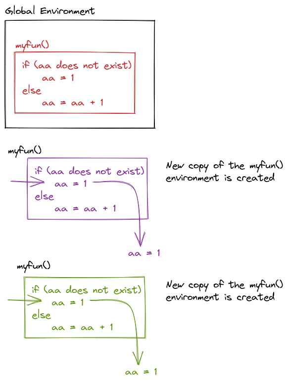

dog <- "Eddie"
goodpup <- function(name) {
paste(name, "is a good pup!")
}
goodpup(dog)[1] "Eddie is a good pup!"This week’s coursework is broken into two parts. First you will learn how to write functions that work with vectors. Then, in the second part, you will take your knowledge of functions and modify your code to work with data frames.
By the end of the week, you should have a grasp of:
Writing your own functions in R
Making good decisions about function arguments and returns
Including side effects and / or error messages in your functions
Good R coding style for functions
You might be coming into this chapter wondering, “Why would I write a function?”. Especially, if thus far you’ve been able to do everything with built-in functions and / or reusing your code a few times.
The critical motivation behind functions is the “don’t repeat yourself” (DRY) principle. In general, “you should consider writing a function whenever copied and pasted your code more than twice (i.e. you now have three copies of the same code)” (Wickham & Grolemund, 2020).
One of my favorite papers, Best Practices for Scientific Computing, summarizes this idea in a slightly different way:
Anything that is repeated in two or more places is more difficult to maintain. Every time a change or correction is made, multiple locations must be updated, which increases the chance of errors and inconsistencies. To avoid this, programmers follow the DRY Principle, which applies to both data and code.
The DRY Principle applies at two scales: small and large. At small scales, researchers (you) should work to modularize code instead of copying and pasting. Modularizing your code helps you remember what the code is doing as a single mental chunk. This makes your code easier to understand, since there is less to remember! Another perk is that your modularized code can also be more easily re-purposed for other projects. At larger scales, it is vital that scientific programmers (you) re-use code instead of rewriting it (Wilson et al., 2014).
If you are interested in reading more about these “best practices” you can find the article here: https://journals.plos.org/plosbiology/article?id=10.1371/journal.pbio.1001745
In R, functions are defined (or assigned names) the same as other variables, using <-, but we specify the arguments a function takes by using the function() statement. The contents of the function are contained within { and }. If the function returns a value, a return() statement can be used; alternately, if there is no return statement, the last computation in the function will be returned.
![The image describes the structure of writing functions in R. It explains that functions are defined using the syntax function_name <- function(function_parameter1, function_parameter2), where the word 'function' indicates the definition of a function. The parameters are enclosed within parentheses and listed as function_parameter1 and function_parameter2. The function body, which contains the operations or code the function executes, is enclosed in curly braces. The return(function_value) statement specifies what value the function should return. However, if no return statement is provided, the last line of the function body is returned automatically. The image uses color-coded annotations to explain each part of the function structure.](images/week-7/annotating_function_syntax.png)
An argument is the name for the object you pass into a function.
A parameter is the name for the object once it is inside the function (or the name of the thing as defined in the function).
Let’s examine the difference between arguments and parameters by writing a function that takes a puppy’s name and returns "<name> is a good pup!".
dog <- "Eddie"
goodpup <- function(name) {
paste(name, "is a good pup!")
}
goodpup(dog)[1] "Eddie is a good pup!"In this example R function, when we call goodpup(dog), dog is the argument. name is the parameter. What is happening inside the computer’s memory as goodpup() runs?
![The image illustrates the concept of function environments versus the global environment in R. It starts by showing a variable dog in the global environment, set to 'Eddie', and a function goodpup defined as function(name) { paste(name, 'is a good pup!') }. When res <- goodpup(dog) is called, the function creates a temporary local environment where the variable name is assigned the value 'Eddie'. The paste function combines name with the string 'is a good pup!, returning 'Eddie is a good pup', which is then stored in res in the global environment. The image emphasizes that the local environment of the function only exists during the function call. The variable name is never defined in the global environment, meaning it cannot be accessed outside of the goodpup function. Annotations highlight that variables in the global environment, such as dog and res, are accessible globally, while local variables, like name, are temporary and exist solely within the function’s scope.](images/week-7/function_argument_parameters.png)
goodpup, showing that name is only defined within the local environment that is created while goodpup is running. We can never access name in our global environment.This is why the distinction between arguments and parameters matters. Parameters are only accessible while inside of the function - and in that local environment, we need to call the object by the parameter name, not the name we use outside the function (the argument name).
We can even call a function with an argument that isn’t defined outside of the function call: goodpup("Tesla") produces “Tesla is a good pup!”. Here, I do not have a variable storing the string "Tesla", but I can make the function run anyways. So "Tesla" here is an argument to goodpup but it is not a variable in my environment.
This is a confusing set of concepts and it’s ok if you only just sort of get what I’m trying to explain here. Hopefully it will become more clear as you write more code.
For each of the following blocks of code, identify the function name, function arguments, parameter names, and return statements. When the function is called, see if you can predict what the output will be.
my_mean <- function(x) {
censor_x <- sample(x, size = length(x) - 2, replace = F)
mean(censor_x)
}my_mean(1:10)my_meanmy_mean(1:10)[1] 5.375Question 1 – In the second variant of rescale01(), infinite values are left unchanged. Fill in the code below to rewrite rescale01() so -Inf is mapped to 0, and Inf is mapped to 1.
rescale01 <- function(x) {
rng <- range(x, na.rm = TRUE, finite = TRUE)
rescale_out <- case_when(
is.numeric(x) _____ ~ (x - rng[1] ) / (rng[2] - rng[1]),
x _____ ~ 0,
x _____ ~ 1)
return(rescale_out)
}Question 2 – Fill in the code below to write a function that accepts a vector of birthdates, and outputs the age in years
get_age <- function(x) {
birthdates <- mdy(x)
time_passed <- _____(
today() - birthdates
) |>
day()
# Getting the age people are, not what age they will turn soon!
ages <- _____(time_passed / 365)
return(ages)
}Question 3 – Fill in the code below to write both_na(), a summary function that takes two vectors of the same length and returns the number of positions that have an NA in both vectors.
both_na <- function(x, y) {
na_matches <- which(is.na(x)) %in% which(is.na(y))
return(
# Find the number (sum) of the positions with matches
sum(
## Convert logical values to 0s and 1s
_____(na_matches)
)
)
}In the examples above, you didn’t have to worry about what order parameters were passed into the function, because there were 0 and 1 parameters, respectively. But what happens when we have a function with multiple parameters?
divide <- function(x, y) {
x / y
}In this function, the order of the parameters matters! divide(3, 6) does not produce the same result as divide(6, 3). As you might imagine, this can quickly get confusing as the number of parameters in the function increases.
In this case, it can be simpler to use the parameter names when you pass in arguments.
divide(3, 6)[1] 0.5divide(x = 3, y = 6)[1] 0.5divide(y = 6, x = 3)[1] 0.5divide(6, 3)[1] 2divide(x = 6, y = 3)[1] 2divide(y = 3, x = 6)[1] 2As you can see, the order of the arguments doesn’t much matter, as long as you use named arguments, but if you don’t name your arguments, the order very much matters.
When you write a function, you often assume that your parameters will be of a certain type. But you can’t guarantee that the person using your function knows that they need a certain type of input. In these cases, it’s best to validate your function input.
In R, you can use stopifnot() to check for certain essential conditions. If you want to provide a more illuminating error message, you can check your conditions using if() or if(){ } else{ } and then use stop("better error message") in the body of the if or else statement.
add <- function(x, y) {
x + y
}
add("tmp", 3)Error in `x + y`:
! non-numeric argument to binary operatoradd <- function(x, y) {
stopifnot(is.numeric(x),
is.numeric(y)
)
x + y
}
add("tmp", 3)Error in `add()`:
! is.numeric(x) is not TRUEadd(3, 4)[1] 7add <- function(x, y) {
if(is.numeric(x) & is.numeric(y)) {
x + y
} else {
stop("Argument input for x or y is not numeric")
}
}
add("tmp", 3)Error in `add()`:
! Argument input for x or y is not numericadd(3, 4)[1] 7add <- function(x, y) {
if(!is.numeric(x) | !is.numeric(y)) {
stop("Argument input for x or y is not numeric")
}
x + y
}
add("tmp", 3)Error in `add()`:
! Argument input for x or y is not numericadd(3, 4)[1] 7Input validation is one aspect of defensive programming - programming in such a way that you try to ensure that your programs don’t error out due to unexpected bugs by anticipating ways your programs might be misunderstood or misused. If you’re interested, Wikipedia has more about defensive programming.
add_or_subtract <- function(first_num,
second_num = 2,
type = "add") {
if (type == "add") {
first_num + second_num
} else if (type == "subtract") {
first_num - second_num
} else {
stop("Please choose `add` or `subtract` as the type.")
}
}For the three calls to the add_or_subtract() function, which of the following will be output?
add_or_subtract()add_or_subtract() functionadd_or_subtract(5, 6,
type = "subtract")
add_or_subtract("orange")
add_or_subtract(5,
6,
type = "multiply")When talking about functions, for the first time we start to confront a critical concept in programming, which is scope. Scope is the part of the program where the name you’ve given a variable is valid - that is, where you can use a variable.
A variable is only available from inside the region it is created.
What do I mean by the part of a program? The lexical scope is the portion of the code (the set of lines of code) where the name is valid.
The concept of scope is best demonstrated through a series of examples, so in the rest of this section, I’ll show you some examples of how scope works and the concepts that help you figure out what “scope” actually means in practice.
Scope is most clearly demonstrated when we use the same variable name inside and outside a function. Note that this is 1) bad programming practice, and 2) fairly easily avoided if you can make your names even slightly more creative than a, b, and so on. But, for the purposes of demonstration, I hope you’ll forgive my lack of creativity in this area so that you can see how name masking works.
What does this function return, 10 or 20?
a <- 10
myfun <- function() {
a <- 20
a
}
myfun()![The image demonstrates the difference between function environments and the global environment in R. It shows that in the global environment, the variable a is initially set to 10. When a function myfun() is called, it creates a local environment where a is assigned a new value of 20. This local value of a only exists within the scope of the function myfun() and does not affect the global variable a. The image highlights that even though a = 20 inside myfun(), this change does not apply outside the function. The global a remains unchanged at 10 unless explicitly modified in the global environment. The arrows visually represent how myfun() creates and uses a separate local environment where the variable a can be manipulated independently from the global a.](images/week-7/function-scope.png)
myfun(). Because a = 20 inside myfun(), when we call myfun(), we get the value of a within that environment, instead of within the global environment.a <- 10
myfun <- function() {
a <- 20
a
}
myfun()[1] 20a[1] 10The lexical scope of the function is the area that is between the braces. Outside the function, a has the value of 10, but inside the function, a has the value of 20. So when we call myfun(), we get 20, because the scope of myfun is the local context where a is evaluated, and the value of a in that environment dominates.
This is an example of name masking, where names defined inside of a function mask names defined outside of a function.
Another principle of scoping is that if you call a function and then call the same function again, the function’s environment is re-created each time. Each function call is unrelated to the next function call when the function is defined using local variables.
myfun <- function() {
if aa is not defined
aa <- 1
else
aa <- aa + 1
}
myfun()
myfun()
What does this output?

{fig-alt=” The image explains how repeated calls to the myfun() function in R yield the same output because the function does not create or store an object in the global environment. The function myfun() uses an if-else statement: if the variable aa does not exist, it assigns aa the value 1; otherwise, it increments aa by 1. Each time myfun() is called, a new, independent copy of the function’s environment is created. The image depicts two separate calls to myfun(), both initializing aa to 1 because aa is not stored in either the function enviroment (where the function looks first) or in the global environment (where the function looks next) and therefore does not persist between calls. As a result, aa is always reset to 1 during each function invocation, with no accumulation occurring across different calls. The image emphasizes that the local environment created by the function is temporary and does not affect the global environment.”}myfun <- function() {
if (!exists("aa")) {
aa <- 1
} else {
aa <- aa + 1
}
return(aa)
}
myfun()[1] 1myfun()[1] 1Scoping determines where to look for values – when, however, is determined by the sequence of steps in the code. When a function is called, the calling environment (the global environment or set of environments at the time the function is called) determines what values are used.
If an object doesn’t exist in the function’s environment, the global environment will be searched next; if there is no object in the global environment, the program will error out. This behavior, combined with changes in the calling environment over time, can mean that the output of a function can change based on objects outside of the function.
myfun <- function(){
x + 1
}
x <- 14
myfun()
x <- 20
myfun()
What will the output be of this code?
![The image demonstrates how a function's output can change based on different values of a global variable x in R. At the top, the image shows a simple function myfun() that adds 1 to x. Below, two scenarios illustrate the behavior of myfun(): In Calling Environment 1, x is initially set to 14 in the global environment. When myfun() is called, the function adds 1 to x, resulting in x = 15. In Calling Environment 2, x is set to 20 in the global environment. When myfun() is invoked, the function again adds 1 to x, producing x = 21. Arrows illustrate the flow from the global environment to the function call and back, emphasizing that the function modifies x based on its current global value in each calling environment. The image visually shows how the same function can yield different results depending on the initial value of x. To be clear, the global value of x is never changing, it is only the output of the myfun() function that is changing.](images/week-7/function-scope-calling-environment.png)
myfun <- function() {
x + 1
}
x <- 14
myfun()[1] 15x <- 20
myfun()[1] 21What does the following function return? Make a prediction, then run the code yourself. (Taken from (Wickham 2015, chap. 6))
f <- function(x) {
f <- function(x) {
f <- function() {
x ^ 2
}
f() + 1
}
f(x) * 2
}
f(10)f <- function(x) {
f <- function(x) {
f <- function() {
x ^ 2
}
f() + 1
}
f(x) * 2
}
f(10)[1] 202Consider the following code:
first_num <- 5
second_num <- 3
result <- 8
result <- add_or_subtract(first_num,
second_num = 4)
result_2 <- add_or_subtract(first_num)In your Global Environment, what is the value of…
first_numsecond_numresultresult_2Now that you’re writing functions, it’s time to talk a bit about debugging techniques. This is a lifelong topic - as you become a more advanced programmer, you will need to develop more advanced debugging skills as well (because you’ll become more adept at screwing things up).
![A cartoon of a fuzzy round monster face showing 10 different emotions experienced during the process of debugging code. The progression goes from (1) 'I got this' - looking determined and optimistic; (2) 'Huh. Really thought that was it.' - looking a bit baffled; (3) '...' - looking up at the ceiling in thought; (4) 'Fine. Restarting.' - looking a bit annoyed; (5) 'OH WTF.' Looking very frazzled and frustrated; (6) 'Zombie meltdown.' - looking like a full meltdown; (7) (blank) - sleeping; (8) 'A NEW HOPE!' - a happy looking monster with a lightbulb above; (9) 'insert awesome theme song' - looking determined and typing away; (10) 'I love coding' - arms raised in victory with a big smile, with confetti falling.](https://cdn.myportfolio.com/45214904-6a61-4e23-98d6-b140f8654a40/51084276-ab7f-4c57-a0e7-5cf14a277359_rw_1920.png?h=825c5593149a63edef46664796766751)
Let’s start with the basics: print debugging.
This technique is basically exactly what it sounds like. You insert a ton of print statements to give you an idea of what is happening at each step of the function.
Let’s try it out on the previous example (see what I did there?)
Note that I’ve modified the code slightly so that we store the value into returnval and then return it later - this allows us to see the code execution without calling functions twice (which would make the print output a bit more confusing).
f <- function(x) {
print ("Entering Outer Function")
print (paste("x =", x))
f <- function(x) {
print ("Entering Middle Function")
print (paste("x = ", x))
f <- function() {
print ("Entering Inner Function")
print (paste("x = ", x))
print (paste("Inner Function: Returning", x^2))
x ^ 2
}
returnval <- f() + 1
print (paste("Middle Function: Returning", returnval))
returnval
}
returnval <- f(x) * 2
print (paste("Outer Function: Returning", returnval))
returnval
}
f(10)[1] "Entering Outer Function"
[1] "x = 10"
[1] "Entering Middle Function"
[1] "x = 10"
[1] "Entering Inner Function"
[1] "x = 10"
[1] "Inner Function: Returning 100"
[1] "Middle Function: Returning 101"
[1] "Outer Function: Returning 202"[1] 202Debugging: Being the detective in a crime movie where you are also the murderer. - some t-shirt I saw once
The overall process is well described in Advanced R by H. Wickham; I’ve copied it here because it’s such a succinct distillation of the process, but I’ve adapted some of the explanations to this class rather than the original context of package development.
Realize that you have a bug
Google! In R you can automate this with the errorist and searcher packages, but general Googling the error + the programming language + any packages you think are causing the issue is a good strategy.
Make the error repeatable: This makes it easier to figure out what the error is, faster to iterate, and easier to ask for help.
Figure out where it is. Debuggers may help with this, but you can also use the scientific method to explore the code, or the tried-and-true method of using lots of print() statements.
Fix it and test it. The goal with tests is to ensure that the same error doesn’t pop back up in a future version of your code. Generate an example that will test for the error, and add it to your documentation.
There are several other general strategies for debugging:
<-- instead of <- in R and then wondering why your answers are negative.print() statements, or the debugger, or some other strategy depending on your application.print() debugging, but these messages indicate progress - “got into function x”, “returning from function y”, and so on.Do not be surprised if, in the process of debugging, you encounter new bugs. This is a problem that’s well-known it has an xkcd comic. At some point, getting up and going for a walk may help. Redesigning your code to be more modular and more organized is also a good idea.
These section is included as FYI, but you don’t have to read it just now. It;s important, but not urgent, if that makes sense.
If all else has failed, and you can’t figure out what is causing your error, it’s probably time to ask for help. If you have a friend or buddy that knows the language you’re working in, by all means ask for help sooner - use them as a rubber duck if you have to. But when you ask for help online, often you’re asking people who are much more knowledgeable about the topic - members of R core browse StackOverflow and may drop in and help you out. Under those circumstances, it’s better to make the task of helping you as easy as possible because it shows respect for their time. The same thing goes for your supervisors and professors. 🙃

So, with that said, there are numerous resources for writing what’s called a “minimal working example”, “reproducible example” (commonly abbreviated reprex), or MCVE (minimal complete verifiable example). Much of this is lifted directly from the StackOverflow post describing a minimal reproducible example.
The goal is to reproduce the error message with information that is
You should format your question to make it as easy as possible to help you. Make it so that code can be copied from your post directly and pasted into an R script or notebook (e.g. Quarto document code chunk). Describe what you see and what you’d hope to see if the code were working.
Other resources:
Part of writing reproducible and shareable code is following good style guidelines. Mostly, this means choosing good object names and using white space in a consistent and clear way.
You should have already read the sections of the Tidyverse Style Guide relevant to piping, plotting, and naming objects. This week we are extending these style guides to functions.
I would also highly recommend reading through the style guide for naming functions, what to do with long lines, and the use of comments. The guide can be found here: https://style.tidyverse.org/functions.html
Designing functions is somewhat subjective, but there are a few principles that apply:
Question 11 – Which of the tidyverse style guidelines does this function violate?
Rectangle <- function(length=5, width=4){
area = length * width
return(area)}} should be on its own line= signsThe second half of this week’s coursework focuses on writing functions that work with data frames.
By the end of the week you should have a grasp of:
What the “embracing” ({{ }}) operator is
How to use the {{ }} operator in data frame functions
Why we need to use the {{ }} operator when writing data frame functions
Writing functions that work with data frames and call on the functions we’ve become used to (e.g., filter(), select(), summarise()) requires we learn about tidy evaluation. To write these functions you will need to know, at a high level, whether the function you are trying to incorporate uses data masking or tidy selection.
At a high level, data masking is used in functions like arrange(), filter(), and summarize() that compute with variables. Whereas, tidy selection is used for functions like select() and rename() that select variables.
Your intuition about which functions use tidy evaluation should be good for many of these functions. If you can input c(var1, var2, var3) into the function (e.g., select(mtcars, c(vs, am, gear))), then the function uses tidy selection! If you cannot input c(var1, var2, var3) into the function, then the function is performing computations on the data and uses data masking.
If you are interested in learning more about tidy evaluation, I would highly recommend:
enquo() function to injectdplyr functions, whereas we now use embracing {{}}. 🤗dplyrNote for Questions 1 & 2, I am assuming the flight data has a similar structure to the nycflights data from the openintro R package.
head(openintro::nycflights)# A tibble: 6 × 16
year month day dep_time dep_delay arr_time arr_delay carrier tailnum flight
<int> <int> <int> <int> <dbl> <int> <dbl> <chr> <chr> <int>
1 2013 6 30 940 15 1216 -4 VX N626VA 407
2 2013 5 7 1657 -3 2104 10 DL N3760C 329
3 2013 12 8 859 -1 1238 11 DL N712TW 422
4 2013 5 14 1841 -4 2122 -34 DL N914DL 2391
5 2013 7 21 1102 -3 1230 -8 9E N823AY 3652
6 2013 1 1 1817 -3 2008 3 AA N3AXAA 353
# ℹ 6 more variables: origin <chr>, dest <chr>, air_time <dbl>, distance <dbl>,
# hour <dbl>, minute <dbl>Question 1: Fill in the code below to write a function that finds all flights that were cancelled or delayed by more than a user supplied number of hours:
filter_severe <- function(df, hours) {
df |>
filter(dep_delay _____)
}
nycflights |>
filter_severe(hours = 2)Question 2: Fill in the code below to write a function that converts the user supplied variable that uses clock time (e.g., dep_time, arr_time, etc.) into a decimal time (i.e. hours + (minutes / 60)).
standardize_time <- function(df, time_var) {
df |>
# Times are stored as 2008 for 8
mutate( {{ time_var }} :=
as.numeric(
## Grab first two numbers for hour
str_sub(
{{ time_var }},
start = 1,
end = 2)
) +
as.numeric(
## Grab second two numbers for minutes
str_sub(
{{ time_var }},
start = 3,
end = 4)
) / 60
)
}
nycflights |>
standardize_time(arr_time)Question 3: For each of the following functions determine if the function uses data-masking or tidy-selection:
distinct()count()group_by()select()rename_with()across()Question 4: Fill in the code below to build a rich plotting function which:
scatterplot <- function(df, x_var, y_var) {
label <- rlang::englue("A scatterplot of _____ and _____, including a line of best fit.")
df |>
ggplot(mapping = aes(x = _____,
y = _____
)
) +
geom_point() +
geom_smooth(method = "lm", _____) +
labs(title = _____)
}